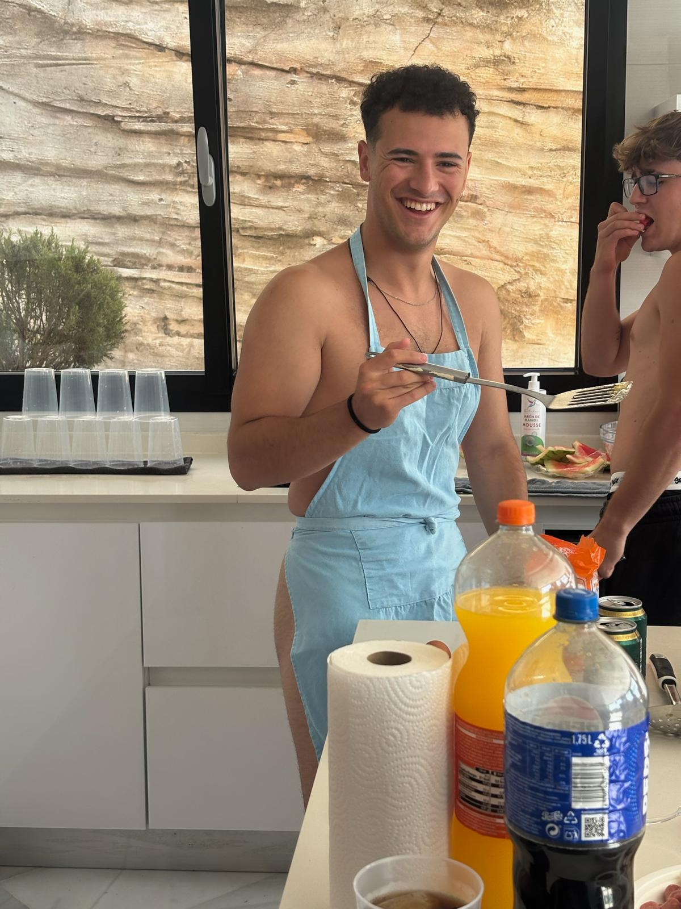
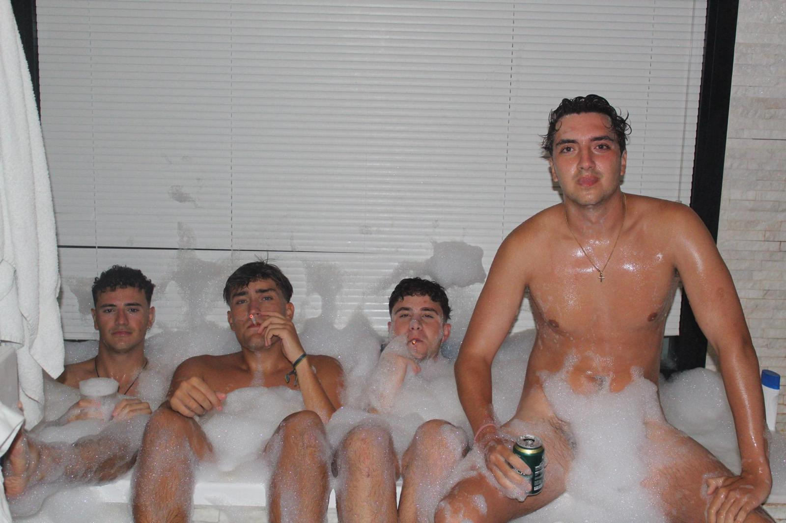
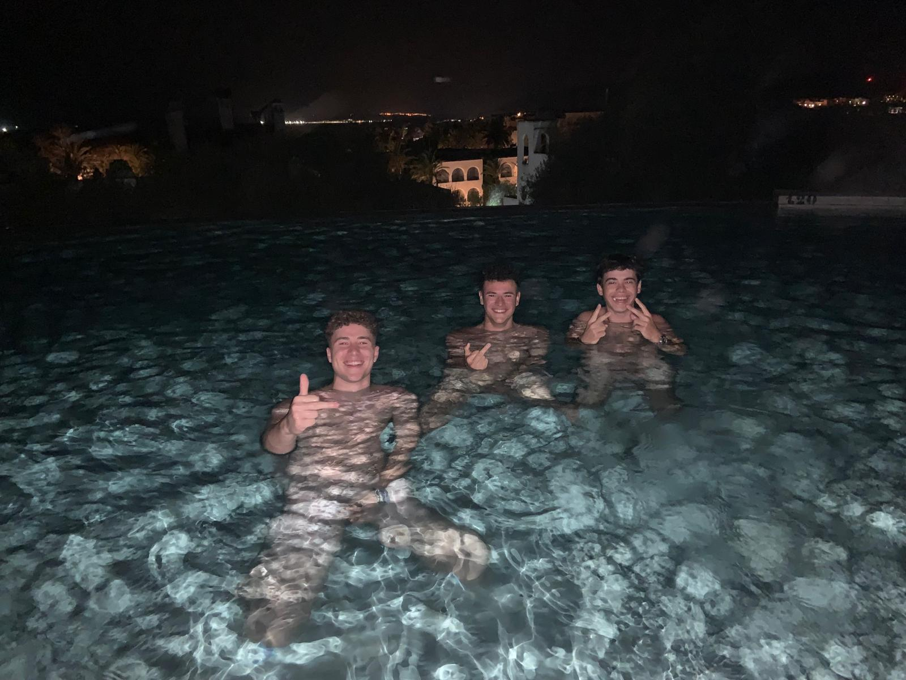
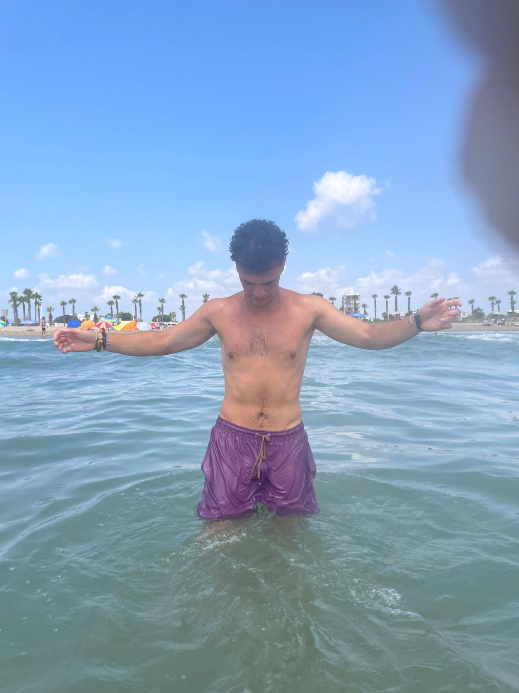
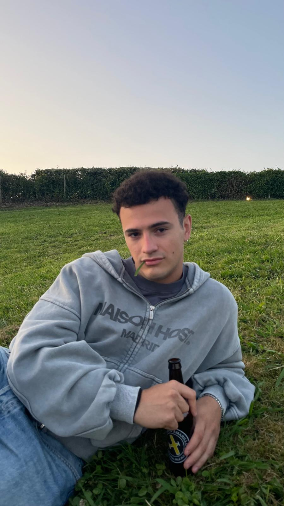
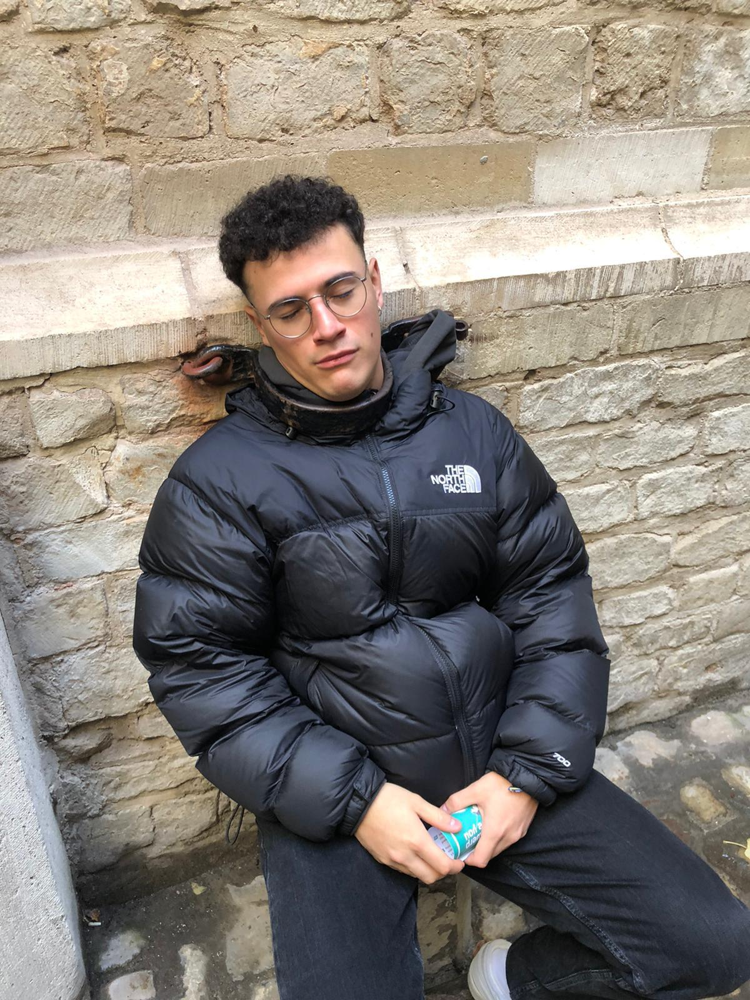

Rafael
Defensa | Dorsal 21
El “21”, lateral derecho de los que están… sin que nadie tenga muy claro para qué. No desentona pero
tampoco destaca en nada: ni defendiendo, ni atacando, simplemente ocupa espacio. Lo único que hace
de maravilla es tocarle el culo y el escroto a los rivales gracias a la increíble técnica
desarrollada en jiu-jitsu, que es claramente el deporte en el que más destaca.
Aunque físicamente es inconfundible, imposible no reconocerle con esas tetas descomunales que se gasta, que le dan más presencia que su propio juego.
Su otra gran obsesión son las faltas. Siempre quiere tirarlas, da igual la distancia o situación. ¿El problema? Que todas acaban igual: en la portería, pero del campo de al lado. Eso sí, donde realmente marca diferencias es en el apartado médico. Es el único jugador que puede lesionarse sin haber tocado balón. Tiene más excusas que partidos jugados: tirones, molestias, luxaciones… y el ya histórico “no salgo que me pican los ojos”, que marcó un antes y un después en su carrera.
Fuera del campo tampoco suma demasiado últimamente. Vive más en Alcorcón que con el equipo y no se le ve en el tercer tiempo desde que le soltó la correa Ana por última vez, allá por 2024. Jugador de plantilla, frágil y con capacidad para desaparecer. Siempre suma… aunque no sepamos muy bien cómo.
Aunque físicamente es inconfundible, imposible no reconocerle con esas tetas descomunales que se gasta, que le dan más presencia que su propio juego.
Su otra gran obsesión son las faltas. Siempre quiere tirarlas, da igual la distancia o situación. ¿El problema? Que todas acaban igual: en la portería, pero del campo de al lado. Eso sí, donde realmente marca diferencias es en el apartado médico. Es el único jugador que puede lesionarse sin haber tocado balón. Tiene más excusas que partidos jugados: tirones, molestias, luxaciones… y el ya histórico “no salgo que me pican los ojos”, que marcó un antes y un después en su carrera.
Fuera del campo tampoco suma demasiado últimamente. Vive más en Alcorcón que con el equipo y no se le ve en el tercer tiempo desde que le soltó la correa Ana por última vez, allá por 2024. Jugador de plantilla, frágil y con capacidad para desaparecer. Siempre suma… aunque no sepamos muy bien cómo.
Galería





